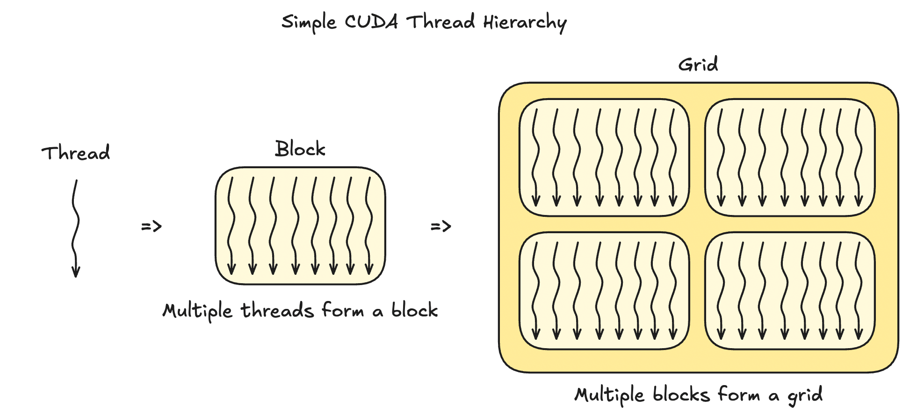
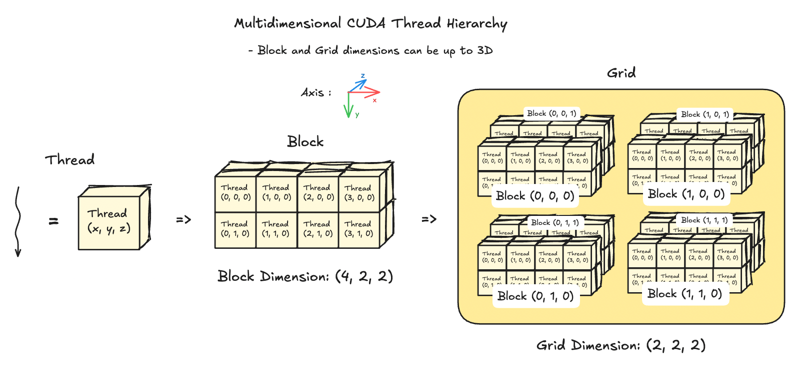
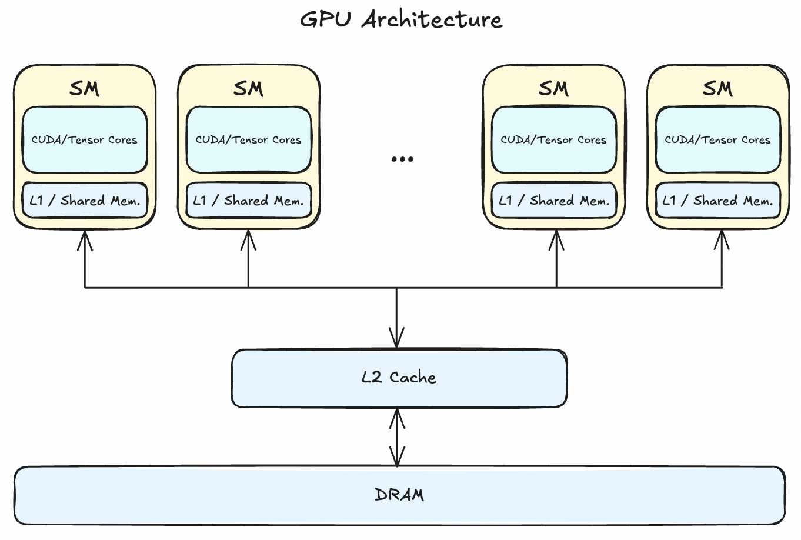
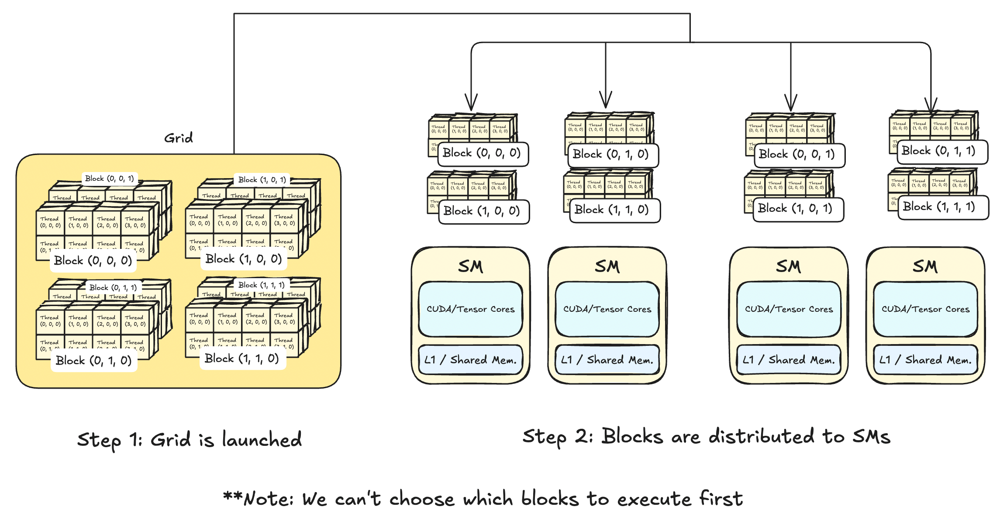
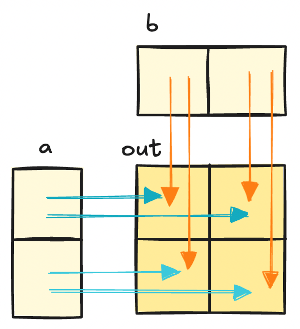
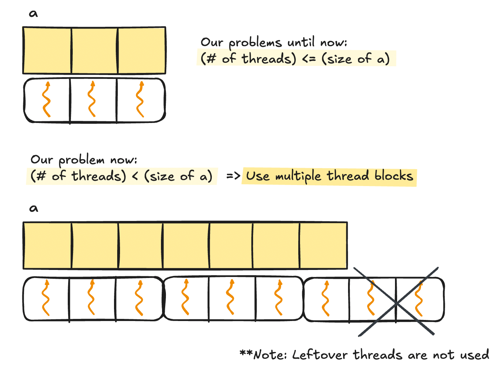
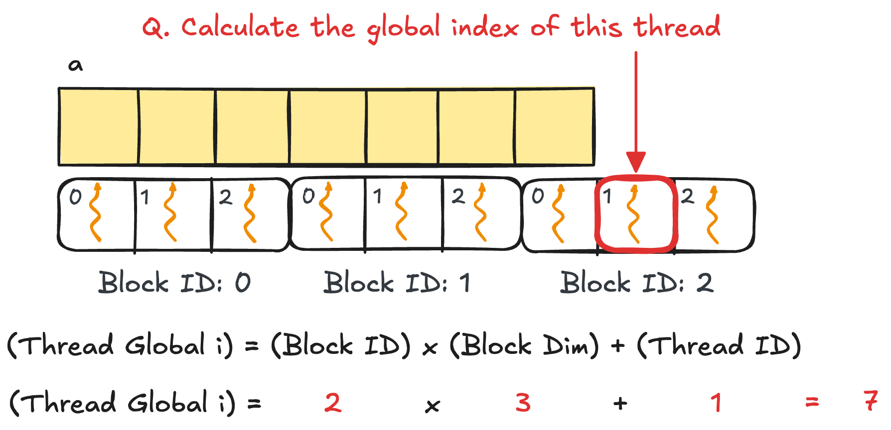

This guide will be a hands-on approach to getting your feet wet with CUDA Programming through solving Sasha Rush’s GPU Puzzles in CUDA.
We’ll cover the basics up to shared memory, focusing on foundational concepts of CUDA and NVIDIA GPUs. No base of GPU programming required, we’ll introduce all necessary ideas as we go.
Let's get started!
Puzzle 1: Map
"Implement a kernel that adds 10 to each position of vector `a` and stores vector `out`. You have 1 thread per position."
Let's take a step back and go over some terminology.
Q. What is a "kernel"?
- A "kernel" in GPU Programming simply means a function that runs on a GPU. But unlike functions that we are used to, GPU kernels run code in a data-parallel manner by launching multiple threads with the same instruction.
Q. What is a "thread"?
- They are the smallest unit of execution that individually carry out the instructions given by the kernel. We'll go deeper into threads when we talk about the CUDA thread hierarchy below.
This leads us to how the CUDA programming model is one that runs the "same instruction on multiple threads." This called as the Single Instruction Multiple Thread(SIMT) model.
This gives us enough knowledge to tackle our first puzzle: we should tell each thread to take the an element from `a`, the input vector, add 10 to it, and place that in the same index of `out`, the output vector.
Let's write that code.
constexpr int VEC_SIZE = 100; // vector size
constexpr int NUM_THREADS = 100; // number of threads
// intermittent code(e.g. initializing data, allocating memory, etc)
// will be omitted for brevity
__global__ void addTenKernel(const float *a, float *out) {
int local_x = threadIdx.x; // assign one thread
out[local_x] = a[local_x] + 10; // take one element from a, add 10, and assign to out
}That was simple! No need for a for-loop or anything like that since the SIMT model lets us map the same instruction to every thread.
Notice how threads are used as indexes. This will be a recurring theme throughout GPU Programming.
The next puzzle is another practice of this.
Puzzle 2: Zip
"Implement a kernel that adds together each position of `a` and `b` and stores it in `out`. You have 1 thread per position."
We can approach this puzzle just like the last one. Let's take one element from `a` and another from `b`, and store it in `out`. Of course, this is vector addition so each thread should share the same index while going from `a`, `b`, and `out`.
Let's code it out.
constexpr int VEC_SIZE = 100; // vector size
constexpr int NUM_THREADS = 100; // number of threads
__global__ void q2_vecadd_kernel(const float *a, float *out) {
int local_x = threadIdx.x; // assign one thread
out[local_x] = a[local_x] + b[local_x]; // do vec add
}Easy!
But this raises the question..."What if we have too many threads? What will the remaining threads do?" After all, puzzles 1 and 2 assumed that VEC_SIZE == NUM_THREADS.
We'll see how to manage this in Puzzle 3.
Puzzle 3: Guards
"Implement a kernel that adds 10 to each position of `a` and stores it in `out`. You have more threads than positions."
This is the exact same problem as puzzle 1, only now we have more threads than the size of the vector.
To solve this problem, we can set some guardrails to prevent overflowing threads from doing anything.
constexpr int VEC_SIZE = 100;
constexpr int NUM_THREADS = 500; // we have more threads than positions
__global__ void q3_solution_kernel(const float *a, float *out, int size) {
int local_x = threadIdx.x; // assign one thread
if (local_x < size): // check if curr thread is within vector size
out[local_x] = a[local_x] + 10;
}That completes our first part of the tutorial. Now we know how to use threads as indexes and set up boundary conditions to create GPU kernels.
But notice that our examples only consisted of vectors until now. What if we wanted to work with matrixes?
And to do this we need to learn about how threads are organized in CUDA.
CUDA Thread Hierarchy
Threads are organized into this hierarchy in CUDA: thread -> block -> grid
Threads come together to form a block and blocks come together to form a grid.
The above image is a simplified explanation. Blocks and grids can be 3-dimensional, which enables us to not only pack a LOT of threads into a grid, but also allows us to work with 2D matrixes and 3D tensors. Let's see an example visualization of blocks and grids that use all 3 dimensions below.

Q. But why do we even bother having a thread hierarchy in the first place? According to the SIMT model, aren't all threads executing the same instruction anyways?
This is a good question to ask, but it's more nuanced. The short answer is that it provides good abstraction for scheduling threads and allows us to write efficient software that is hardware-aware for NVIDIA GPUs.
But a deeper and more interesting answer to this requires a short dive into GPU architecture and how parallel programming works on NVIDIA GPUs.
GPU Architecture Crash Course

- GPUs consist of multiple Streaming Multiprocessors(SMs), L2 cache, and DRAM.
- tldr: Instructions are executed by the SMs and the data lives on the DRAM. The number of SMs and how large your DRAM is differs across architectures (e.g. my 2080ti has 68 SMs and 12GB DRAM).
Let's have a closer look at SMs, the part that's responsible for running our kernel instructions.

Recall the CUDA thread hierarchy is thread -> block -> grid.
Whenever a GPU kernel is called, a grid that holds multiple blocks is launched. These blocks are then distributed amongst the SMs where each SM can carry multiple blocks. By the nature of parallel programming, we can't choose which blocks will be executed first. This means that you shouldn't write any kernels that explicity expects some blocks to finish before others.
With this context, having a CUDA thread hierarchy has multiple benefits:
- Managing millions of launched threads without abstraction will be a nightmare for us. Thread hierarchy helps us understand and debug our kernels from a wider perspective rather than at the individual thread-level.
- - e.g. The H100(SXM5) can support up to ~270,000 threads at once. That's a lot of threads to manage
without abstraction. - The SIMT programming model needs a way for threads to coordinate operations. For example, if a group of threads writes to memory while another group reads from memory, we need a way to sync the operations.
- Having the thread hierarchy allows scheduling threads easy.
- Thread hierarchy is also closely related with hardware.
- Shared memory, an on-chip memory, is accessible at the thread block level. Each block is allocated a portion of the shared memory, which can be accessed by all threads within that block.
1. Abstraction
2. Easier Scheduling of Thread Executions
Note: One question above was "Aren't all thread executing the same instruction anyways?" Although the description of the SIMT model makes it seem like that is the case, it's actually more nuanced. In NVIDIA GPUs, instructions are executed in "warps", where each warp contains 32 threads. See aside on warps section for more.
3. Needed to Use Shared Memory
Note: Starting from the H100 series, there's now a new level added to the hierarchy called "cluster". So now the new CUDA thread hierarchy is thread -> block -> cluster -> grid.
Aside on Warps
Warps are a hardware constraint, which means the number of threads in a warp may change in future NVIDIA GPU architectures. Larger warp sizes will allow for more parallelism, but less flexibility whereas smaller warp sizes will have the opposite effect. 32 seems like the balance that NVIDIA has found and has stuck with for more than 10 years(GeForce 930M has warp size 32 as well).
Now let's put these to practice and tackle the next couple puzzles.
Puzzle 4: Map 2D
"Implement a kernel that adds 10 to each position of `a` and stores it in `out`. Input `a` is square. You have more threads than positions."
Two things to look out for: we are working with 2D matrixes now and we have more threads than positions.
Working with 2D matrixes means that we should work with threads in the `x` dimension and the `y` dimension. Recall that threads can use up to `x`, `y`, and `z` dimensions.
Also, CUDA follows the linear memory model, meaning that we can't do anything like A[x][y] but instead should do A[x * width + y] where width is the width of the matrix A.
And having more threads than positions reminds us to set up guardrails as seen in Puzzle 3.
Let's see how a kernel that combines all this looks like.
constexpr int N = 100; // size of matrix A: [N,N]
// we have more threads than positions
__global__ void q4_solution_kernel(const float *A, float *out, int width) {
int row = threadIdx.y; //row uses y dim
int col = threadIdx.x; //col uses x dim
if (row < width && col < width) { //check bounds
out[row * width + col] = A[row * width + col] + 10;
}
}That is it! We're getting the hang of it now. Let's try something different to check if we got the hang of using 2D thread indexing.
Puzzle 5: Broadcast
"Implement a kernel that adds `a` and `b` and stores it in `out`. Inputs `a` and `b` are vectors. You have more threads than positions."
To recap, our inputs are vectors while our output is a matrix. Let's draw out a diagram below to see what this looks like.
// We have more threads than positions
// a + b where a.shape=[N,1], b.shape=[1,N]
constexpr int N = 100;
__global__ void q5_solution_kernel(const float *a, const float *b, float *out, const int n) {
int row = cuda.threadIdx.y; //row uses y dim
int col = cuda.threadIdx.x; //col uses x dim
if (row < n && col < n) {
// assume a.shape = [N,1] (column vector)
// b.shape = [1,N] (row vector)
out[row * n + col] = a[row] + b[col];
}
}Note: It's important to know which axes you are working with. Drawing out the kernel you are implementing helps a lot.
Using Multiple Thread Blocks
All the puzzles until now worked with a strong assumption: that our input data will be smaller than a single block. This assumption was there for pedagogical purposes, but does not hold in the real world. After all, GPUs excel doing repeated operations over large data, so we will have to deal with using multiple blocks.
And this next puzzle is our first puzzle that shows this!
Puzzle 6: Blocks
"Implement a kernel that adds 10 to each position of `a` and stores it in `out`. You have fewer threads per block than the size of `a`."
Notice how we have fewer threads per block than the input vector. This indicates that we should use multiple blocks to launch enough threads to cover the vector.
To tackle using multiple blocks, we need a way to calculate the global thread index. It is int i = blockIdx.x * blockDim.x + threadIdx.x. Let's see why.

Let's apply this to solve our next puzzle. Let's take a look at the code below.
constexpr int N = 1000;
constexpr int threads_per_block = 32;
// assume that an appropriate number of blocks is called for you
__global__ void q6_solution_kernel(const float *a, float *out, const int n) {
int i = blockIdx.x * blockDim.x + threadIdx.x; // calculate global thread index
if (i < n) {
out[i] = a[i] + 10;
}
}Aside on Deciding the Right Block Size
Choosing the right block size depends on which GPU you are using and the context of your kernel. A general tip is to stick to 32*n < 1024 for 1D vectors and (32,32) for 2D matrixes.
This is because 1 warp = 32 threads and max threads per block = 1024 from V100s and onwards(until H100s, at the time of writing).
Blocks that are too small will not take advantage of powerful parallelism ability of GPUs while blocks that are too large may drop thread utilization rates or stop the kernel from even running at all.
Example: Your input vector size is `101` but your block size is `100`. You will have to use 2 blocks where the second block will utilize only `1%` of your total threads.
Things are coming together now. We know how to deal with 2D data, having too many threads or too few threads. Let's test our knowledge by mixing up two previous puzzles into one: using multiple blocks on 2D matrixes.
Puzzle 7: Blocks 2D
"Implement the same kernel in 2D. You have fewer threads per block than the size of `a` in both directions."
Remember that when working with 2D input data we have to write kernels that uses both `x` and `y` dimensions. This means we need to calculate the global thread indexes for both directions while taking into account that our blocks are also 2D.
Visuals clarify things a lot when writing kernels. Let's see an example where A.shape = [7,7] and BlockDim = (3,3,1).

Let's see what this would look like in code.
constexpr int N = 10000;
constexpr int BLOCK_SIZE_X = 32;
constexpr int BLOCK_SIZE_Y = 32; // 2D block of size (32,32)
// assume that an appropriate number of blocks is called for you
__global__ void q7_solution_kernel(const float *A, float *out, const int width) {
int row = blockIdx.y * blockDim.y + threadIdx.y;
int col = blockIdx.x * blockDim.x + threadIdx.x;
if (row < width && col < width) {
out[row * width + col] = A[row * width + col] + 10;
}
}That's it. There's only one key part remaining in the basic CUDA usage: using shared memory.
Dive into Shared Memory
Loading data from DRAM is simple, but it's incredibly slow. Shared memory comes to the rescue by being an on-chip memory that is incredibly fast to read or write, with the caveat of being much smaller than DRAM. That means as CUDA programmers you have the power to pick which data can live on shared memory(...yes manually..for better or worse).
First, how fast is "fast"? Let's jump ahead a bit and take a peek at how fast matmul becomes just by using shared memory(+tiling).
I wrote a naive matmul vs shared memory mamtul with square matrixes of size `[4096,4096]` and block size `(16,16)` on my 2080ti. Here are the results:
- Naive matmul:
155.375 ms - Shared memory matmul:
96.0123 ms
Shared memory matmul is around 40% faster, with this effect to only expand with larger matrices. Although it's tempting to throw in shared memory everywhere after hearing this speedup, it shouldn't be used everywhere.
Q. When Should We Use Shared Memory?
Here are the scenarios where using shared memory will make your kernel faster.
- If the same data is used multiple times, it would be efficient to cache them somewhere close instead of having to fetch them from global memory every time.
- e.g. Pooling, Convolution
- By loading data to shared memory, threads can access data that were fetched by other threads quickly.
- e.g. Parallel Reduction, such as Prefix Sum
- Non-coalesced or strided memory accesses slow down kernels, but they are required for some applications(e.g. matrix transpose).
- By storing subsequent subsets("tile") of the data in shared memory, we can run non-coalesced memory accesses very quickly.
- e.g. Matrix Multiply
1. Data Reuse
2. Threads Sharing Data
3. Accelerating Non-Coalesced Memory Accesses
Now that we've seen how useful shared memory is, let's do a practice implementation with Puzzle 8.
Puzzle 8: Shared
"Implement a kernel that adds 10 to each position of `a` and stores it in `out`. You have fewer threads per block than the size of `a`."
Spoiler: this puzzle is a bit odd since using shared memory on vector addition doesn't make it any faster.
- No data is reused, no need for threads to share data, and memory accesses are coalesced by default.
We'll run through this puzzle to show how shared memory is implemented in CUDA and we'll look at where using shared memory is actually useful in Part 2 where we walk through optimizing parallel reduction in CUDA.
Let's dive into the code.
constexpr int N = 10000;
constexpr int BLOCK_SIZE = 256;
__global__ void q8_solution_kernel(const float *a, float *out, const int n) {
int i = blockIdx.x * blockDim.x + threadIdx.x;
// init shared memory
__shared__ float shared_a[BLOCK_SIZE];
// copy elements into shared memory
if (i < n) {
shared_a[i] = a[i];
}
__syncthreads(); // sync threads to make sure memory write to shared is all finished before going further
if (i < n) {
// do vec add and write to out
out[i] = shared_a[i] + 10.0f; // use shared_a instead of a
}
}Q. What is __syncthreads()?
- This is a barrier to make sure all threads finished instructions up to this point before moving further.
- Since we are dealing with parallel programs, we might have a situation where
thread 0may have finished copying tosharedbutthread 1is still copying toshared. - Without having barriers, subsequent code may run into undefined behavior by fetching elements in memory that are not written into yet.
Make sure you always include thread barriers whenever you read or write data that will be used later in the code.
That finishes our introduction to CUDA programming! This was more on the basic functionalities available in CUDA and in Part 2 we'll get into the advanced use cases by optimizing a Parallel Reduction Sum kernel.
I don't know how much CUDA is actively written in industry now, but learning it definitely led me to see the hardware side of software and the internal workings of a GPU.
And the more I learn I see how it all goes back to Systems. If you're curious about these realizations of an undergrad going from ML methodology to Systems, continue reading more here(err still writing rn).
References
[1] Sasha Rush, GPU Puzzles Github Repo
[2] NVIDIA GPU Performance Guide
[3] NVIDIA CUDA Compute Capability Specs
[4] Programming Massively Parallel Processors(PMPP) Textbook, 4th ed. Hwu, Kirk, Hajj.